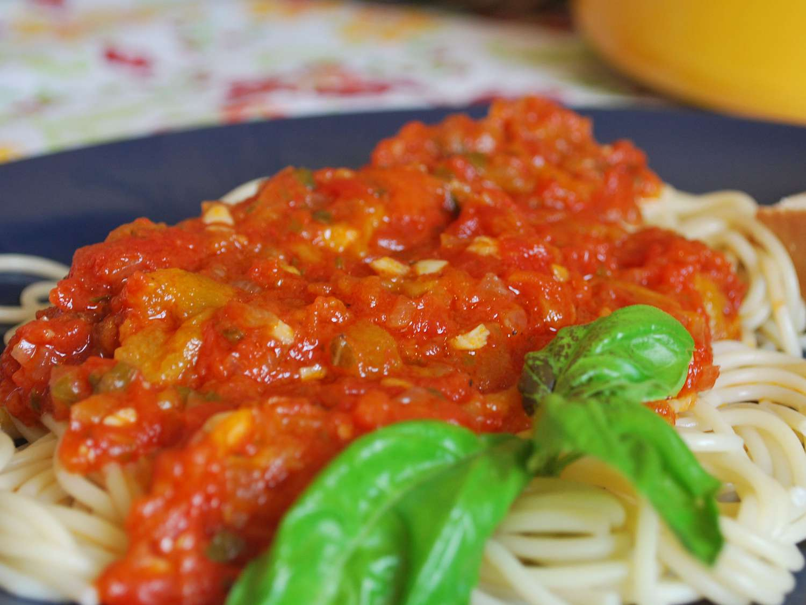

Sinful Basil tomato Spagetti

Time to get hot...
Straight from the warm beaches of southern Italy, this quick meal will turn heads and turn you into the hero of your friend group
Fresh Basil, smooth tomato sauce and of course, a generous portion of al dente Spaghetti are all you need to pull this off
Italian Grandmas all over the country will light a candle to your cooking mastery
You might even get a girlfriend in the process, maybe, it's pasta, not magic you know...
Ingredients:
- A handfull of spaghetti
- 1 bottle of tomato passata
- 2 cloves of garlic
- 1 medium sized onion
- butter to taste
- salt and pepper to taste
- Basil leaves and or grounded Basil
- Water, obviously.
- Optional: 1 finely diced carrot
Let's get cooking...
- Let's start by filling a deep pot with cold water, put a cover on it and put it on the fire, high heat
- While the water boils, dice your onion, garlic, and optional carrots as fine as you can
- Put a pan on at medium-high heat with a drizzle of olive oil
- When the pan is hot, drop the onions, garlic and carrot in it and sprinkle some salt and pepper on them
- Stir your flavours until the onions are slightly browned, then pour in your tomato passata
- Lower the heat to low-medium and after stirring it cover it up and allow it to gently boil for at least 30 minutes
- The longer you allow the sauce to boil, the better it will come out, just don't leave it more than 2 hours
- Towards the end of the sauce cooking time try it, if it's too acidic, add a pinch of sugar, if it's too savoury add butter
- At this point you can "Buttare la Pasta!" salt your now boiling water to taste and trow the spaghettis in
- Whatever cooking time the pasta bag says, do 1 minute less than that, unless you are in Italy, then follow the bag's instructions
- Try your pasta, don't trow it at a wall, just taste it like a normal person
- when you are satisfied with the texture, take out a small cup of pasta water, and put it to the side
- Strain your pasta, and shove it in the pan with the tomato sauce, mix it around and if your sauce is a bit too liquid, add some of that pasta water
- Grate some fresh parmesan on the top, and guarnish with 3-4 leafs of basil
Et Voila! a dinner fit for a true casanova, if you have leftovers (which I doubt), you can easily reheat it in a pan for 3 days afterwards!
All hail the Italians.